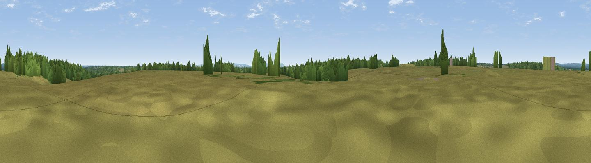

Blackhamsley Hill
#39524 in England · top 64% of its area beats it · near SwayWhere it is
The exact computed spot (SZ 27937 99813). Click the marker for map links.
The view, rendered

A 360° render of this exact spot computed from the terrain model, tree cover and land cover — summer colours, afternoon light, calibrated against photographs of famous viewpoints. Real trees, hedges and buildings will differ in detail.
The panorama
Grey silhouette: terrain skyline in each direction (720 bearings, Earth curvature and refraction included). Dashed green: skyline with trees (+15 m) and buildings (+8 m) as obstacles. Blue strip: how far the ground is visible on each bearing.
Where the view opens
Wedge length = distance to the farthest visible ground on that bearing (vegetation-aware). Rings at 10, 25 and 50 km.
What fills the view
62% grassland · 33% woodland · 2% water · 2% cropland · 1% built-up
Angular shares of the visible panorama (visual magnitude), not map area. Landscape diversity 0.38 (0–1 Shannon).
Key numbers
More beautiful places nearby
The staircase of upgrades: each row has a higher view potential than everything closer. Driving times are estimates from straight-line distance, calibrated against real road routing — check an actual route before setting out.
| Place | Direction | Drive | Score |
|---|---|---|---|
| Viewpoint near Barton on Sea | SSW · 8 km | ~16 min | 44.1 |
| Viewpoint near Emery Down | N · 9 km | ~18 min | 44.9 |
| Viewpoint near Highcliffe-on-Sea | SW · 9 km | ~18 min | 46.0 |
| Viewpoint near Wick | SW · 14 km | ~25 min | 47.8 |
| Viewpoint near Cranmore | SE · 14 km | ~26 min | 55.1 |
| Warren Hill | SW · 14 km | ~26 min | 60.1 |
| Viewpoint near Cranmore | SE · 14 km | ~26 min | 60.4 |
| West High Down | S · 15 km | ~27 min | 79.8 |
50.79721, -1.60496 · source: osm peak · position refined by local search. Computed location — check access rights before visiting.